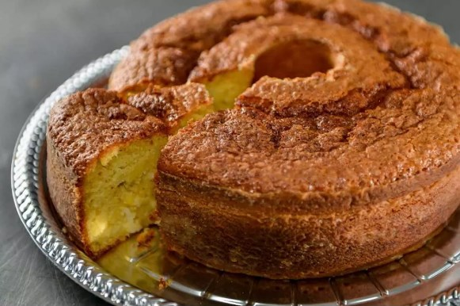

BOLO DE MILHO SIMPLES

INGREDIENTES
- 1 lata de milho (com a aguá do próprio milho)
- 1 lata de leite condensado
- 4 ovos
- 100 g de coco ralado
- 2 colheres de chá de erva doce
- 1 colher de sopa de fermento em pó
MODO DE PREPARO
- Bater todos os ingredientes no liquidificador até virar um creme, ou seja, quando o milho já estiver bem triturado.
- Unte uma forma pequena (de preferência com um furo no meio) com claybom e farinha de trigo, e despeje toda a mistura.
- Coloque no forno pré-aquecido em temperatura média, até o bolo ficar bem douradinho.
- Para verificar se o bolo está realmente pronto pegue um palito e fure o bolo, se o palito sair limpo o bolo está cozido.
- Espere esfriar e desenforme o bolo.
- Pronto.